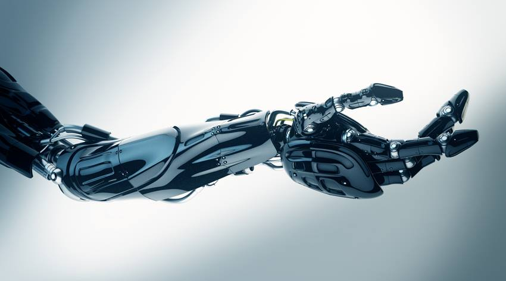

ULTRA BIONIC
Enjoy With Our Prosthetic Arm
ULTRA BIONIC
Enjoy With Our Prosthetic Arm
ABOUT US
We're a bionics company developing affordable, assistive devices that enhance the human body.
We've started by introducing the Hero Arm, a stylish multi-grip bionic hand.
Current upper limb prostheses exist as hooks, grippers, or expensive bionic hands.
We're on a mission to make beautiful bionic limbs more accessible.
The TEAM
SERVICES
We’re partnering with clinicians all over the world to manufacture Hero Arms for both adults and children over eight years old with acquired or congenital below-elbow upper limb differences. The Hero Arm is the only advanced multi-grip bionic arm that’s affordable enough to be covered by national healthcare systems in major western markets. The Hero Arm has up to six easy-to-select grips, such as fist, hook, pinch and tripod, as well as a manually posable thumb and wrist, giving your patients outstanding versatility and proportional control to perform light to moderate everyday activities
We’re partnering too with technical teams all over the world to manufacture Hero Arms and repair any problems of mechanism or softwares faced both adults and children over eight years old with acquired or congenital below-elbow upper limb differences. The Hero Arm is a lightweight myoelectric prosthetic arm with versatile multi-grip functionality, an adjustable and breathable socket, high-performance batteries and microprocessors, and empowering aesthetics
BIONIC ARM
Meet the Hero Arm, the world's first clinically approved 3D-printed bionic arm,
with multi-grip functionality and empowering aesthetics. Engineered in Bristol,
UK, the Hero Arm is a lightweight and affordable myoelectric prosthesis,
available now in the USA, UK and France for below elbow amputee adults
and children aged eight and above. Grab, pinch, high-five, fist bump, thumbs-up.
Welcome to the future, where disabilities are superpowers.
We’re now offering Star Wars BB-8, Marvel Iron Man and Disney Frozen bionic arm covers
for free to limb-different children with every Hero Arm.
In Mark Hamill's words: your limb difference is your very own superpower.
Get A Disney Cover
Super Cool Bionics
There are an estimated five million upper limb amputees globally.
Ultra Bionics is building and developing the next generation of
bionic limbs and turning disabilities into superpowers.
Find out more about Ultra Bionic Arm